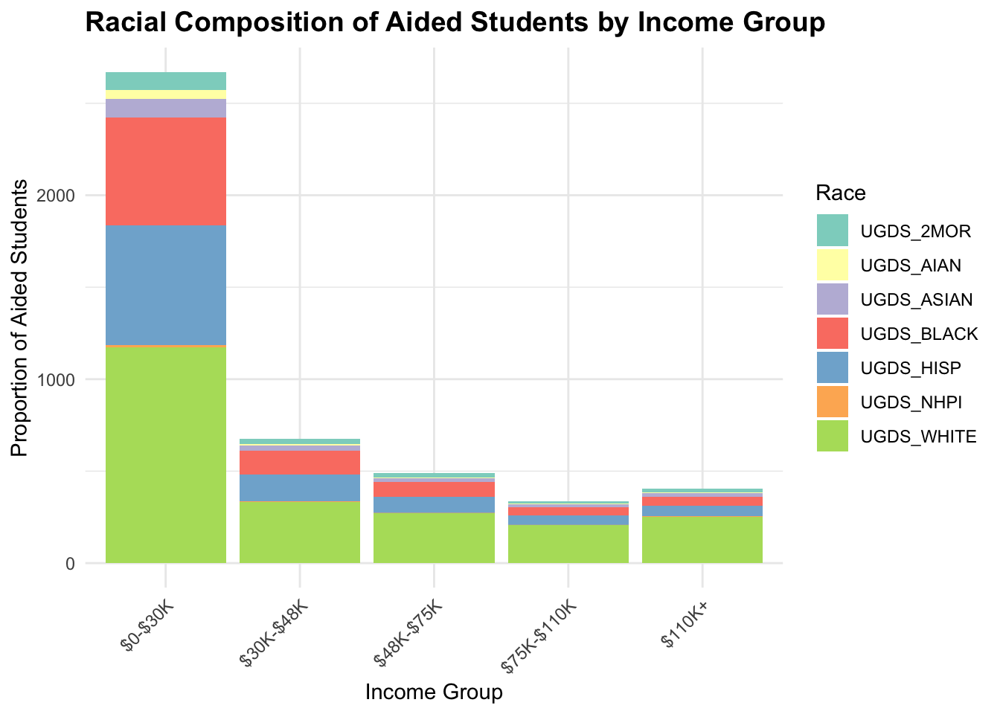

Analysis
Here we provide a detailed analysis using more sophisticated statistics techniques.
This comes from the file analysis.qmd.
Introduction and Motivation
People often view higher education institutions as a significant pathway to reduce systemic inequalities and promote upward mobility. However, it remains uncertain how much a family’s financial background and racial demographics affect things like dropout rates, academic readiness, and post-graduation earnings. This study evaluates how effectively higher education addresses these issues by analyzing family income, average student debt, racial composition, financial aid, and completion rates. Specifically, the focus is on whether higher education institutions reduce disparities in outcomes like retention and post-graduation earnings or if these disparities persist despite access to higher education.
This work supports the thesis that racial disparities in income differences are more considerable before people go to college than in post-graduation earnings. Additionally, it looks at how things before college, such as SAT/ACT scores, connect to economic mobility. This offers a better understanding of the role of higher education in mitigating systemic challenges in society.
Statistical Model
Our motivation for research begs an obvious question: how can you measure whether one college is a better engine for economic equality than another? To address this, we developed a custom pseudo-variance metric that could quantify the inequality in post-graduation incomes partitioned on family income prior to entering college, for each observed college. Available data limits the partitioning to three categories: students hailing from families making below $30,000 in annual household income (an approximation of the established poverty line), students from families making between $30,001-$75,000, and students from families making more than $75,000. Traditional variance cannot be directly calculated for the three income brackets because the average of the three post-graduation incomes differs across colleges, making the variance influenced not only by the spread of the incomes but also by the central value.
This pseudo-variance metric measures the aggregate percentage difference in median post-graduation incomes between the designated terciles, 10 years out of college. It is calculated by dividing the median earnings of each tercile by the maximum median of the three partitioned incomes, effectively standardizing the median incomes, then subtracting the sum of the standardized median incomes by the theoretical maximum. The smaller a college’s var_measure, the smaller the difference between the median incomes of the three terciles. For example, Boston University’s var_measure is 3.96, indicating that the university performs well in guaranteeing similar post-gradation incomes to all students regardless of their economic background. Compare this with East Tennessee State University in Johnson City, TN, which has a var_measure of 30.40, indicating that the aggregate difference between post-graduation incomes for each tertile is 30 percent. Through these examples, you can see that this metric provides a tailored way to evaluate inequalities in post-graduation income for each college.
Before building the model, our group evaluated our response variable under the scrutiny of MLR assumptions. Because the pseudo-\(\chi^2\) nature of our var_measure, it was known that a quantile-quantile plot would reject the normally-distributed assumption. This was easily resolved using a square root transformation on the response variable. Subsequent Q-Q plots depicted a straight line with heavily tamed tails. Further, a Residual vs. Fitted plot illustrated a random scatter of points around zero, demonstrating homoscedasticity among error terms with expected value equal to zero. The final assumption regarding independence of observations is tricky to navigate, however we decided to ultimately move forward with the model but with more caution than we first anticipated.
Variable Selection
Choosing predictors for this statistical model involved a lengthy processing method. The approximately 300 variables in the cleaned dataset were narrowed down to roughly thirty of greatest interest. The first issue variable selection posed was significant multicollinearity between predictors. Due to the proportional nature of the datatset, some variables were de facto categorical complements of other variables. To mitigate possible multicollinearity, we removed another subset of potential predictors. The resulting variables, with the exception of ones measuring racial proportions, all quantify financial factors pertaining specifically to the lowest income brackets. These include metrics such as the proportion of students awarded a Pell Grant, the percentage of federal student loan borrowers making progress on their loan, and the percentage of aided students whose family income is between $0-$30,000. A comprehensive list of these variables is presented below. The hypothesis being that if colleges are more financially supportive of their more economically fragile students, then they are likely better at closing post-graduation inequality gaps.
Model Variables
- var_measure: Pseudo-variance metric for measuring post-graduation income equality
- UGDS_BLACK: Total share of enrollment of undergraduate degree-seeking students who are black
- UGDS_HISP: Total share of enrollment of undergraduate degree-seeking students who are Hispanic
- UGDS_ASIAN: Total share of enrollment of undergraduate degree-seeking students who are Asian
- FTFTPCTFLOAN_POOLED_SUPP: Percentage of full-time, first-time degree/certificate-seeking undergraduate students awarded a federal loan
- INC_PCT_LO: Percentage of aided students whose family income is between $0-$30,000
- INC_PCT_M1: Percentage of aided students with family incomes between $30,001-$48,000
- INC_PCT_LO*INC_PCT_M1: Interaction term between
INC_PCT_LOandINC_PCT_M1 - LO_INC_DEBT_MDN: The median debt for students with family income between $0-$30,000”
- BBRR3_FED_PELL_MAKEPROG: Percentage of Pell Grant recipient federal student loan borrowers making repayment progress after 3 years
We considered creating an interaction term between BBRR3_FED_PELL_MAKEPROG and BBRR3_PP_PELL_MAKEPROG (Percentage of Pell Grant recipient student Parent PLUS Loan borrowers making progress after 3 years) because of a suspected dependency between the variables. The theory is that if a student is making progress on paying their federal loans back then they are also likely making progress in paying their PLUS loans back; however, the resulting interaction term did not significantly contribute to model predictability, so it was not included in the final model. Moreover, the predictor BBRR3_PP_PELL_MAKEPROG had a p-value of nearly 1.0000, indicating an utterly insignificant relationship to our response variable. It would not be included in our final model.
The same suspected dependency between INC_PCT_LO and INC_PCT_M1 encouraged us to include an interaction term between the two financial aid metrics. We theorized that colleges are likely awarding financial aid to similar proportions of students from the lower income brackets. This interaction term proved to play a significant role in improving our model so it stayed as a predictor.
We acknowledged the dependent nature of our race variables (as they measure proportions of a whole), but we decided to leave them in the final model because isolating the racial affects on our response variable outweighed possible multicollinearity issues. This problem of highly correlated predictors was mitigated by only focusing on a subset of the racial breakdown: the most frequent races among student populations, i.e. Black, Hispanic, and Asian.
Results
The final model is represented by the following equation: \[
\begin{equation}
\sqrt{var\_measure_i} = 10.6397 - 2.1601*UGDS\_BLACK_i - 1.5554*UGDS\_HISP_i - 2.0451*UGDS\_ASIAN_i \\
+ 1.5862*FTFTPCTFLOAN\_POOLED\_SUPP_i - 6.5651*INC\_PCT\_LO_i - 27.1280*INC\_PCT\_M1_i \\
+ 51.8836*(INC\_PCT\_LO*INC\_PCT\_M1)_i - 0.0001*LO\_INC\_DEBT\_MDN_i \\
- 7.3350*BBRR3\_FED\_PELL\_MAKEPROG_i + \epsilon_i
\end{equation}
\] This multiple linear regression model has an adjusted correlation of determination of 0.2639308 and a RMSE of 1.145915, indicating that the average error is only 1.31 units off from a college’s true var_measure value. We believe the reason for such a low adjusted correlation of determination and RMSE is due to the narrow range of sqrt(var_measure): nearly all values of the response variable fall between 2 and 8. Because there is little variance to explain, the adjusted \(R^2\) and RMSE are naturally low.
Interpretations of each of the nine predictor coefficients are provided below:
\(\beta_{BLACK}\) = -2.1601: A one percentage point increase in the share of Black students at a college is associated with a 0.0005 unit decrease in a college’s
var_measure.\(\beta_{HISP}\) = -1.5554: A one percentage point increase in the share of Hispanic students at a college is associated with a 0.0002 unit decrease in a college’s
var_measure.\(\beta_{ASIAN}\) = -2.0451: A one percentage point increase in the share of Asian students at a college is associated with a 0.0004 unit decrease in a college’s
var_measure.\(\beta_{PCTFLOAN}\) = 1.5862: A one percentage point increase in percent of full-time undergraduate students at a college who are awarded a federal loan is associated with a 0.0003 unit increase in a college’s
var_measure.\(\beta_{INC\_PCT\_LO}\) = -6.5651: A one percentage point increase in percent of aided students at a college whose family income is between $0-$30,000 is associated with a 0.0043 unit decrease in a college’s
var_measure.\(\beta_{INC\_PCT\_M1}\) = -27.1280: A one percentage point increase in percent of aided students at a college whose family income is between $30,001-$48,000 is associated with a 0.0736 unit decrease in a college’s
var_measure.\(\beta_{LO*M1}\) = 51.8836: For a one percentage point increase in percent of aided students at a college whose family income is between $0-$30,000, the effect of a one percentage point increase in percent of aided students at a college whose family income is between $30,001-$48,000 is associated with a 0.2692 unit increase in a college’s
var_measure(and vice versa).\(\beta_{DEBT}\) = -0.0001: A $1,000 increase in the median debt for students with family income between $0-$30,000 is associated with a 0.1 unit decrease in a college’s
var_measure.\(\beta_{MAKEPROG}\) = -7.3350: A one percentage point increase in the percent of a college’s Pell-Grant-recipient federal-student-loan borrowers making repayment progress after 3 years is associated with a 0.0054 unit decrease in a college’s
var_measure.
An interesting take away from the variable selection process was that the proportion of students awarded a Pell Grant was not significantly associated with a lower var_measure not including white - UGDS_WHITE: Total share of enrollment of undergraduate degree-seeking students who are white
this confusing too: - \(\beta_{LO*M1}\) = 51.8836: For a one percentage point increase in percent of aided students at a college whose family income is between $0-$30,000, the effect of a one percentage point increase in percent of aided students at a college whose family income is between $30,001-$48,000 is associated with a 0.2692 unit increase in a college’s var_measure (and vice versa).
The stacked bar chart illustrates the racial composition of aided students by income group. Each income group ($0–$30K, $30K–$48K, $48K–$75K, $75K–$110K, $110K+) is represented on the x-axis, while the y-axis shows the proportional contributions of racial groups to the total number of aided students in that income group. The colors correspond to different racial groups, such as White, Black, Hispanic, Asian, etc.
Observations & Conclusions
- The largest proportion of aided students comes from the lowest income group ($0-30k)
- The lowest income group shows a more diverse racial distribution compared to higher income groups
- While White students make up the majority in all income groups, racial minorities are present in notable proportions, especially in the lower income brackets
- As income increases, the overall number of aided students decreases significantly
- This figure touches on the role financial aid can play in bridging financial disparities, enabling students from low-income and underrepresented racial backgrounds to access higher education
- Financial aid is essential in leveling the playing field for student from low-income backgrounds
Limitations
- This figure assumes proportionality. It assumes that the racial composition of financial aid recipients within each income group is directly proportional to the overall racial composition of the institution. This may not reflect reality as financial aid distribution often varies based on additional factors like institutional policies, eligibility criteria, and systemic barriers that can favor or exclude certain racial groups.
- The assumptions in this figure highlight the need for further data on whether aid is distributed equitably across racial and income groups.
- Therefore, this figure should be used as a general estimate rather than a precise measurement.

This scatterplot illustrates the relationship between racial diversity of low income students (families earning less than $30,000 annually) are influenced by the racial composition of colleges, as measured by the proportion of underrepresented racial groups (1 - UGDS_WHITE). The x-axis represents the proportion of underrepresented racial groups in colleges, while the y-axis shows the withdrawal rate, which is defined as the percentage of low income who left their original institution within four years. By faceting the data by income level, this analysis focuses specifically on the low income students.
Observations & Conclusions
- A slight downward trend in withdrawal rates is visible as racial diversity increases. This trend suggests that institutions with greater racial diversity may provide more supportive and inclusive environments for economically disadvantaged students, which could contribute to lower withdrawal rates.
- In contrast, colleges with predominantly white students enrollments tend to show slightly higher withdrawal rates for low income students, while institutions with greater diversity show marginally better retention rates. The marginally better retention rates in more diverse colleges align with the idea that diverse racial composition might mitigate some of the challenges faced by low income students.
- These findings support our thesis that racial disparities in family income are greater before college than after graduation. While low-income students face significant systemic barriers before enrolling in college, the diversity of their college may mitigate some of these challenges, improving retention rates during college.
- However, the modest slope of the loess trend line suggests that while institutional diversity is significant, its effect on withdrawal rates is relatively small. This highlights the importance of other factors, such as financial aid availability, campus resources, and academic support, in fostering student retention.
Limitations
- It is assumed that higher levels of racial diversity (1 - UGDS_WHITE) are associated with better student support for low-income students, but diverse institutions may still need to be equipped with adequate student support services.
- Colleges in predominantly white areas may naturally have lower diversity and face unique retention challenges due to regional demographic differences.
- Different college policies, such as financial aid allocation, admissions criteria, and retention strategies, should be accounted for.
- 1 - UGDS_WHITE does not capture the nuance of other racial groups or how race interacts with factors such as income, first-generation status, or academic ability.
- The subtle trend in this figure suggests that racial diversity alone has a limited impact on retention. Other factors, such as faculty representation, curriculum inclusivity, and campus resources, may have a more significant impact.
We describe here our detailed data analysis. This page will provide an overview of what questions you addressed, illustrations of relevant aspects of the data with tables and figures, and a statistical model that attempts to answer part of the question. You’ll also reflect on next steps and further analysis.
The audience for this page is someone like your class mates, so you can expect that they have some level of statistical and quantitative sophistication and understand ideas like linear and logistic regression, coefficients, confidence intervals, overfitting, etc.
While the exact number of figures and tables will vary and depend on your analysis, you should target around 5 to 6. An overly long analysis could lead to losing points. If you want you can link back to your blog posts or create separate pages with more details.
The style of this paper should aim to be that of an academic paper. I don’t expect this to be of publication quality but you should keep that aim in mind. Avoid using “we” too frequently, for example “We also found that …”. Describe your methodology and your findings but don’t describe your whole process.
Example of loading data
The code below shows an example of loading the loan refusal data set (which you should delete at some point).
library(tidyverse)
print(getwd())[1] "/Users/thomaspoulin/Documents/ma415/ma-4615-fa24-final-project-group-12"data <- read_rds(here::here("dataset/loan_refusal_clean.rds"))Note on Attribution
In general, you should try to provide links to relevant resources, especially those that helped you. You don’t have to link to every StackOverflow post you used but if there are explainers on aspects of the data or specific models that you found helpful, try to link to those. Also, try to link to other sources that might support (or refute) your analysis. These can just be regular hyperlinks. You don’t need a formal citation.
If you are directly quoting from a source, please make that clear. You can show quotes using > like this
> To be or not to be.To be or not to be.
Rubric: On this page
You will
- Introduce what motivates your Data Analysis (DA)
- Which variables and relationships are you most interested in?
- What questions are you interested in answering?
- Provide context for the rest of the page. This will include figures/tables that illustrate aspects of the data of your question.
- Modeling and Inference
- The page will include some kind of formal statistical model. This could be a linear regression, logistic regression, or another modeling framework.
- Explain the ideas and techniques you used to choose the predictors for your model. (Think about including interaction terms and other transformations of your variables.)
- Describe the results of your modelling and make sure to give a sense of the uncertainty in your estimates and conclusions.
- Explain the flaws and limitations of your analysis
- Are there some assumptions that you needed to make that might not hold? Is there other data that would help to answer your questions?
- Clarity Figures
- Are your figures/tables/results easy to read, informative, without problems like overplotting, hard-to-read labels, etc?
- Each figure should provide a key insight. Too many figures or other data summaries can detract from this. (While not a hard limit, around 5 total figures is probably a good target.)
- Default
lmoutput and plots are typically not acceptable.
- Clarity of Explanations
- How well do you explain each figure/result?
- Do you provide interpretations that suggest further analysis or explanations for observed phenomenon?
- Organization and cleanliness.
- Make sure to remove excessive warnings, hide most or all code, organize with sections or multiple pages, use bullets, etc.
- This page should be self-contained, i.e. provide a description of the relevant data.